 main page
recommendations
guide
images
Jaworzno
, Osiedle Stałe
Jaworzno
, Osiedle Stałe here, have some squirrel pictures. because squirrels are nice!
 Jaworzno, Osiedle Stałe
Jaworzno, Osiedle Stałe